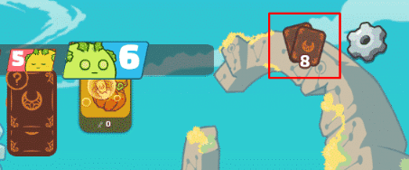

<div class="axie-app">

  <div class="axie-app-wrapper">

    <div #switchContainer class="switch-container">
      <div class="switch-block" *ngIf="switchTo == ''">
        <h1 class="light t-shadow--1">Axie Counter</h1>
        <h2 class="light t-shadow--1">Round {{ currentRound }}</h2>

        <div class="side-by-side">
          <app-energy-counter></app-energy-counter>
          <app-card-counter></app-card-counter>
        </div>

        <div class="main-cta">
          <button class="button crimson inner-shadow--1" (click)="resetCounter()">
            <span>Reset</span>
          </button>

          <button class="button gold inner-shadow--1" (click)="endTurn()">
            <span>End Turn</span>
          </button>

        </div>

        <div class="set-count">

          <input #cardInput type="number">
          <div class="cta">
            <button class="button crimson inner-shadow--1" (click)="setCurrentCard(cardInput)">
              <span>Set Card</span>
            </button>
            <button class="button orange card-info" (click)="toggleSetCard()">
              <span>?</span>
            </button>
          </div>

        </div>

        <div class="new-counter">
          <button class="button green inner-shadow--1" (click)="newAxieCounter()">
            <span>New Counter</span>
          </button>
        </div>
      </div>

      <div class="switch-block" *ngIf="switchTo == 'set-card-info'">
        <h2 class="light t-shadow--1">Set Card</h2>

        <p>
          Set Card can be used for specific reason, Axie Counter has its limitation when it comes to Card Count
        </p>

        <p>
          Every end-turn we can predict the amount of card your enemy has base on Used, Draw, Discard
        </p>

        <p>
          Within the current round if enemy axie dies - the cards that axie has will be removed, to get back on track of
          your enemy card count, just input the previous cards enemy has. example
        </p>

        <div class="preview">
          
        </div>

        <p>
          From the example previous cards enemy has was 8 then input 8, and automatically add 3 cards and a total
          of 11 cards
        </p>

        <div class="back-cta">
          <button class="button crimson inner-shadow--1" (click)="switchTo = ''">
            <span>Back</span>
          </button>
        </div>
      </div>
    </div>

  </div>

</div>
